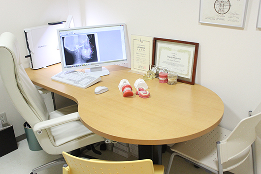

- ホーム
- 医院紹介・設備・アクセス
医院紹介・設備・アクセス
院内紹介
待合室
リラックスしながら診療をお待ちいただけるように、大きなソファをご用意しました。光がたっぷり差し込むサロンのような待合室では、アロマの香りをお楽しみいただけます。ウォーターサーバーを設置しておりますので、どうぞご自由にお飲みください。
受付
初めての方でも安心していただけるように、丁寧な対応を心がけております。治療中の疑問・質問、料金のことなど、わからないことがあれば、お気軽にスタッフまでおたずねください。
診療室
プライバシーに配慮した半個室の診療室です。常に気持ちよく使用していただくために、感染対策や滅菌には細心の注意を払っています。
診療室
プライバシーに配慮した半個室の診療室です。常に気持ちよく使用していただくために、感染対策や滅菌には細心の注意を払っています。
カウンセリングルーム

カウンセリングルーム
治療前のカウンセリングや、治療計画などのご説明を行なうスペースです。ご納得いただけるまで丁寧に説明しますので、気になることなどがあれば、お気軽におたずねください。
滅菌対策
当医院ではコップやエプロンまで、可能な限りディスポーザブル（使い捨て）のものを使用しています。また、ミラーやピンセットなどの診療器具類は全て滅菌処理を行ない、患者さまごとに交換しています。
診療の直前に密封された滅菌パックを開封して使用していますので、安心してご受診ください。
医院情報
| 名称 | くらしま矯正歯科医院 |
|---|---|
| 住所 | 〒216-0033 神奈川県 川崎市宮前区宮崎5-14-1 |
| 電話番号 | 044-856-1900 |
| 診療時間 |
|
| 休診日 | 休診日：木曜・祝祭日 ※日曜日と月曜日は隔週で診療 |
| 代表者氏名 | 院長 倉島茂樹（くらしましげき） |
| 最寄り駅 | 東急田園都市線「宮崎台駅」より徒歩6分 たまプラーザ駅より3駅目 乗車5分 |
| 駐車場 | 敷地内2台完備 |
アクセス
町田方面からお越しの方へ
町田方面からお越しの場合は、登戸野川線の「宮崎（交差点）」を左折して梶ケ谷菅生線にお入りください。160mほど進むと1つ目の信号が出てきますので、そこを右折しますと左手のマンション1階部分に当院がございます。マンション敷地内に駐車場を2台分ご用意していますので、そちらをご利用ください。
宮崎台駅からお越しの方へ
宮崎駅からお越しの場合は、北口から駅を出ていただき、右方向へお進みください。三菱UFJ銀行とファミリーマートがある角を曲がり、道なりに進むと1階部分に「飛鳥交通グループ」の看板が設置されているマンションが見えてきます。そのマンションのある丁字路を右に曲がり、梶ケ谷菅生線で左にお曲がりください。そこから3つ目の信号を右に曲がると、左手すぐのマンションに当院がございます。